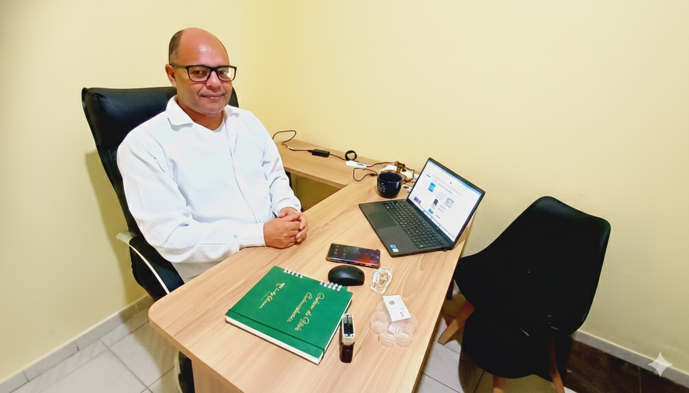
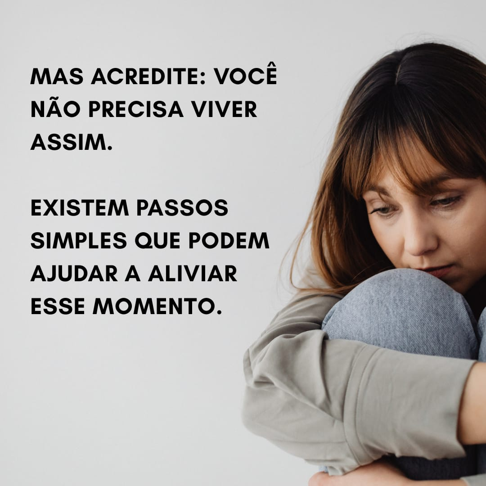
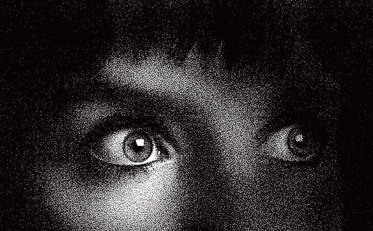

"Minha experiência com o Vagno Jonis tem sido transformadora. Desde a primeira sessão, me senti em um ambiente seguro e sem julgamentos. Ele tem uma sensibilidade única para ouvir o que nem sempre conseguimos dizer com palavras. Recomendo de olhos fechados!"
— Mariana SilvaVocê se sente afetado por quadros de ansiedade, depressão ou insegurança?
Vamos conversar
Marcar ConsultaSobre Vagno Jonis
Vagno Jonis é psicólogo há mais de 6 anos, apaixonado por ajudar pessoas a ressignificarem suas histórias e encontrarem equilíbrio emocional. Especialista em Terapia Cognitivo-Comportamental (TCC), utiliza também em suas sessões técnicas de Mindfulness para auxiliar no processo terapêutico.

Depoimentos
"Procurei o Vagno em um momento de muita ansiedade e confusão mental. Com muita paciência e técnica, ele me ajudou a organizar meus pensamentos e a encontrar ferramentas práticas para lidar com o dia a dia. Hoje me sinto muito mais no controle da minha vida."
— Ricardo Oliveira"Excelente psicólogo! O Vagno é extremamente atencioso, ético e pontual. O processo terapêutico com ele tem feito uma diferença gigante na minha saúde mental."
— Lucas MendesInvestimentos
-
💎
Sessão Avulsa
Flexibilidade para atendimentos pontuais — R$190,00
-
📌
Sessão Quinzenal
2 sessões — R$370,00 (R$185 cada)
-
📦
Pacote 4 sessões
5% de desconto — R$720,00 (R$180 cada)
-
📦
Pacote 6 sessões
R$1.026,00 (R$171 cada)
-
📦
Pacote 8 sessões
15% de desconto — R$1.280,00 (R$160 cada)
-
🎯
Pacote 12 sessões
21% de desconto — R$1.800,00 (R$150 cada)
-
🎯
Orientação Profissional
6 a 8 sessões — R$1.400,00 (valor fixo)
Como funciona?
O que acontece na primeira sessão?
- Você me diz sua disponibilidade e, de acordo com minha agenda, fazemos uma marcação da primeira sessão.
- Se você gostar da nossa primeira sessão, fechamos o pacote com quatro sessões de 50 minutos.
- Na entrevista inicial, o psicólogo realiza uma escuta ativa para compreender o contexto e as queixas do paciente, estabelecendo um vínculo de confiança. O objetivo é conhecer a história de vida, identificar os principais desafios e iniciar a construção do entendimento sobre as demandas emocionais e psicológicas.
- O diagnóstico é elaborado a partir da análise das informações coletadas na entrevista, testes psicológicos, observações e a avaliação dos sintomas. O foco é identificar possíveis transtornos ou questões psicológicas, além de entender as causas subjacentes e as possíveis interações com o contexto social e familiar do paciente..
- Com base no diagnóstico, é formulado um plano de tratamento personalizado, que pode incluir sessões de psicoterapia, técnicas específicas e objetivos claros. O plano busca promover a mudança necessária no paciente, respeitando seu tempo, ritmo e necessidades, e pode ser ajustado conforme o progresso observado durante o acompanhamento.
- A alta é concedida quando o paciente atinge os objetivos terapêuticos ou demonstra melhora significativa no quadro, conseguindo aplicar as estratégias adquiridas durante o processo. A alta não significa o fim do cuidado, mas a conclusão de uma fase do tratamento, podendo ser necessário acompanhamento esporádico para garantir a manutenção dos resultados alcançados.
Como eu posso te ajudar?
Ansiedade
Está sentindo que a ansiedade está dominando seu dia a dia? Saiba que você não está sozinho nessa jornada. Muitas pessoas enfrentam desafios semelhantes, mas a boa notícia é que é possível encontrar apoio e tratar a ansiedade de forma eficaz.

Tristeza
Todos nós passamos por momentos de tristeza. Quando a tristeza se prolonga e começa a afetar sua qualidade de vida, é importante buscar ajuda. Com apoio psicológico, você pode entender melhor suas emoções e aprender formas saudáveis de lidar com elas.
Depressão
A depressão pode parecer um peso impossível de carregar, mas você não precisa enfrentá-la sozinho. Com o acompanhamento certo, você pode superar esse momento difícil e se reconectar com a esperança e a alegria de viver.

Medos
O medo pode nos paralisar, mas não precisa controlar nossa vida. Se seus medos estão impedindo você de seguir em frente, saiba que com orientação psicológica é possível aprender a lidar com eles de forma saudável.
Marque uma consulta online
A terapia online é um espaço seguro e acolhedor onde você pode se expressar com liberdade e praticidade adaptando a sua rotina , local e horários.
WhatsApp